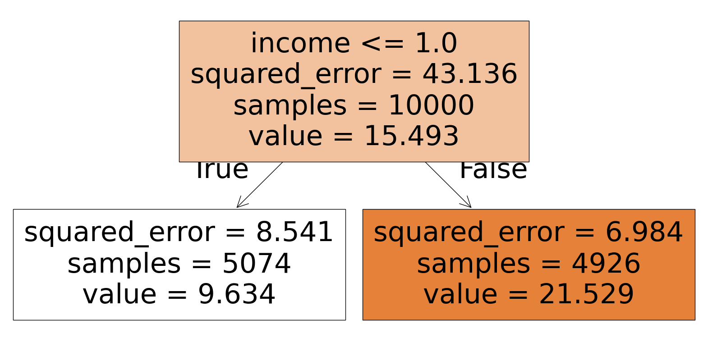
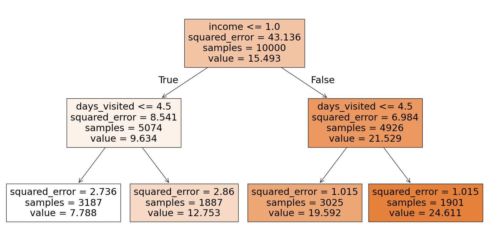

import pandas as pd
import numpy as np
import statsmodels.api as sm
import statsmodels.formula.api as smf
from sklearn.tree import DecisionTreeRegressor
import matplotlib.pyplot as plt
from sklearn.tree import plot_tree
from sklearn.linear_model import LinearRegression
from sklearn import tree
og_df = pd.read_csv("https://msalicedatapublic.z5.web.core.windows.net/datasets/Pricing/pricing_sample.csv")
og_df.columns = og_df.columns.str.replace(' ', '_').str.lower() # Clean column namesdef show_tree(cp_val):
reg_tree = DecisionTreeRegressor(ccp_alpha=cp_val)
reg_tree.fit(reg_tree_data.drop(columns='demand'), reg_tree_data['demand'])
plt.figure(figsize=(20,10))
tree.plot_tree(reg_tree, filled=True, feature_names=reg_tree_data.drop(columns='demand').columns)
plt.show()
pricing_df = og_df.copy()
reg_tree_data = pricing_df.drop(columns=['price', 'has_membership', 'is_us'])
show_tree(5)
show_tree(1)
cp_val = 1
reg_tree = DecisionTreeRegressor(ccp_alpha=cp_val)
reg_tree.fit(reg_tree_data.drop(columns='demand'), reg_tree_data['demand'])DecisionTreeRegressor(ccp_alpha=1)In a Jupyter environment, please rerun this cell to show the HTML representation or trust the notebook.
On GitHub, the HTML representation is unable to render, please try loading this page with nbviewer.org.
DecisionTreeRegressor(ccp_alpha=1)
pricing_df| account_age | age | avg_hours | days_visited | friends_count | has_membership | is_us | songs_purchased | income | price | demand | |
|---|---|---|---|---|---|---|---|---|---|---|---|
| 0 | 3 | 53 | 1.834234 | 2 | 8 | 1 | 1 | 4.903237 | 0.960863 | 1.0 | 3.917117 |
| 1 | 5 | 54 | 7.171411 | 7 | 9 | 0 | 1 | 3.330161 | 0.732487 | 1.0 | 11.585706 |
| 2 | 3 | 33 | 5.351920 | 6 | 9 | 0 | 1 | 3.036203 | 1.130937 | 1.0 | 24.675960 |
| 3 | 2 | 34 | 6.723551 | 0 | 8 | 0 | 1 | 7.911926 | 0.929197 | 1.0 | 6.361776 |
| 4 | 4 | 30 | 2.448247 | 5 | 8 | 1 | 0 | 7.148967 | 0.533527 | 0.8 | 12.624123 |
| ... | ... | ... | ... | ... | ... | ... | ... | ... | ... | ... | ... |
| 9995 | 2 | 56 | 6.095439 | 3 | 10 | 0 | 0 | 7.406568 | 0.545599 | 0.8 | 9.447720 |
| 9996 | 3 | 52 | 7.828183 | 7 | 5 | 0 | 1 | 0.782374 | 0.944415 | 0.8 | 15.314092 |
| 9997 | 1 | 27 | 6.527350 | 6 | 9 | 0 | 1 | 10.926441 | 0.815953 | 1.0 | 11.263675 |
| 9998 | 4 | 49 | 2.803943 | 6 | 9 | 1 | 1 | 4.205016 | 0.504313 | 0.8 | 12.801971 |
| 9999 | 5 | 35 | 9.334821 | 2 | 9 | 0 | 1 | 2.971992 | 1.456270 | 1.0 | 21.667410 |
10000 rows × 11 columns
pricing_df['leaf'] = reg_tree.apply(reg_tree_data.drop(columns='demand'))
# Elasticity function
def own_price_reg(leaf_num):
df = pricing_df[pricing_df['leaf'] == leaf_num]
model = smf.ols('demand ~ price * has_membership * is_us', data=df).fit()
return model.params['price']
elasticities = [own_price_reg(leaf) for leaf in pricing_df['leaf'].unique()]
print(elasticities)[-18.265984327571324, -18.17187119271577, -5.235805786421214, -1.4067338547890245]